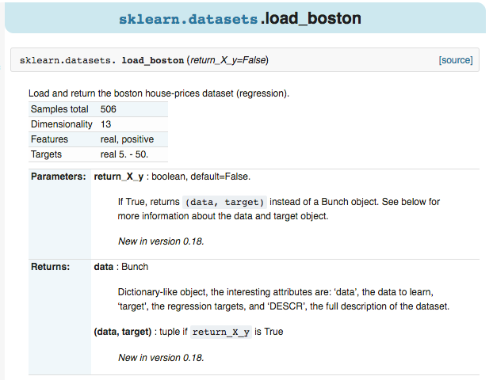
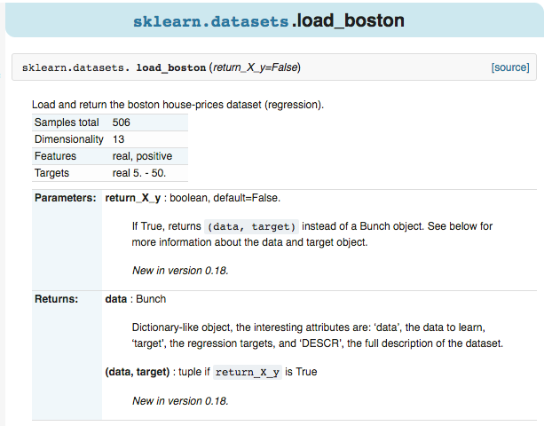

Sklearn中有许多且游泳的data set，可以用来学习算法模型 eg: boston放假，糖尿病，数字，Iris花。 也可以生成虚拟的数据，例如可以生成用来训练线性回归模型的数据等。
Sklearn
data set
例如，点击进入boston房价的数据，可以看到sample的总数，属性，以及label等信息。 
sample
label
导入datasets包，本文以Linear Regression为例。
datasets
Linear Regression
from sklearn import datasets from sklearn.linear_model import LinearRegression import matplotlib.pyplot as plt
用dataset.load_boston()的形式加载数据，并给X和y赋值，这种形式在Sklearn中都是高度统一的。
dataset.load_boston()
X
y
model = LinearRegression() loaded_data = datasets.load_boston() data_X = loaded_data.data data_y = loaded_data.target
可以直接用默认值来简历model，也可以自己改变参数使模型更好。然后用training data去训练模型。
model
training data
model = LinearRegression() model.fit(data_X,data_y)
再打印出预测值，这里用X的前4个来预测，同时打印出真实值，可以看出是存在误差的。
print model.predict(data_X[:4,:]) print data_y[:4]
[ 30.00821269 25.0298606 30.5702317 28.60814055] [ 24. 21.6 34.7 33.4]
为了提高准确度可以通过尝试不同的model，不同的参数，不同的预处理方法，入门的话可以直接使用默认值。
用函数来建立100个samlpe，有一个feature，一个target，这样比较方便可视化。
samlpe
feature
target
X, y = datasets.make_regression(n_samples=100,n_features=1, n_targets=1,noise=10)
用scatter的形式来输出结果。
scatter
plt.scatter(X,y) plt.show()
可以看到用函数生成的Linear Regression用的数据。noise越大的话点就会越离散。
noise
X, y = datasets.make_regression(n_samples=100,n_features=1, n_targets=1,noise=50) plt.scatter(X,y) plt.show()
Sklearn中有许多且游泳的data set，可以用来学习算法模型eg: boston放假，糖尿病，数字，Iris花。 也可以生成虚拟的数据，例如可以生成用来训练线性回归模型的数据等。
例如，点击进入boston房价的数据，可以看到
sample的总数，属性，以及label等信息。 1.导入模块
导入
datasets包，本文以Linear Regression为例。2.导入数据 - 训练模型
用
dataset.load_boston()的形式加载数据，并给X和y赋值，这种形式在Sklearn中都是高度统一的。可以直接用默认值来简历
model，也可以自己改变参数使模型更好。然后用training data去训练模型。再打印出预测值，这里用X的前4个来预测，同时打印出真实值，可以看出是存在误差的。
为了提高准确度可以通过尝试不同的model，不同的参数，不同的预处理方法，入门的话可以直接使用默认值。
3.创建虚拟数据 - 可视化
用函数来建立100个
samlpe，有一个feature，一个target，这样比较方便可视化。用
scatter的形式来输出结果。可以看到用函数生成的
Linear Regression用的数据。noise越大的话点就会越离散。本文全部代码